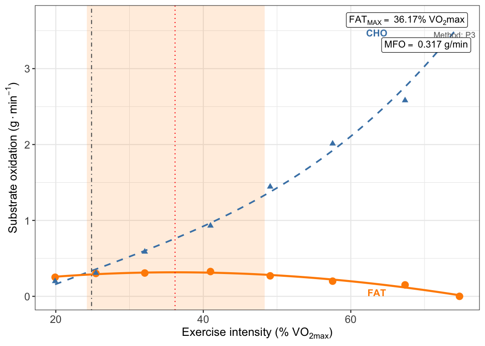
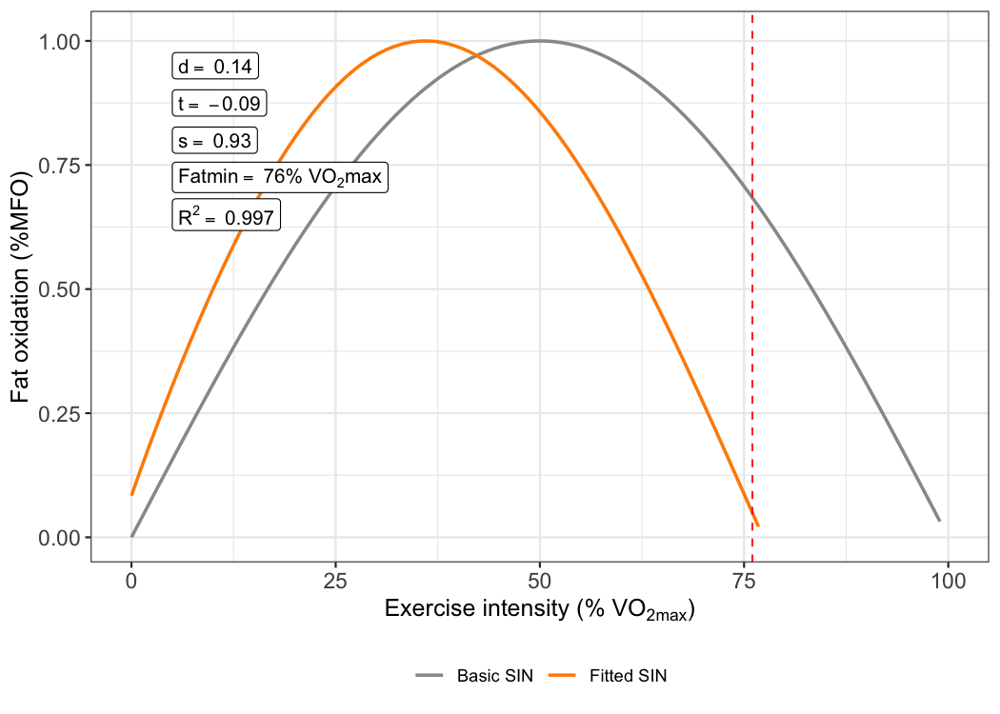

MFO computes, from indirect-calorimetry data, the maximal fat oxidation rate (MFO), the exercise intensity at which it occurs (Fatmax), the Fatmax zone, the crossover point, and the SIN model of fat oxidation kinetics (Chenevière et al., 2009). It is aimed at sport and health scientists who run graded exercise tests and want a reproducible, documented alternative to hand-made spreadsheets.
Installation
The development version (0.2.x, recommended) is installed from GitHub:
# install.packages("pak")
pak::pak("JorgeDelro/MFO")The CRAN release is still 0.1.0 (2022) and lacks most of the features described below:
install.packages("MFO")What you need
One participant is described by three recordings, exported from the gas analyser at a fixed sampling interval (step_time, in seconds) with columns VO2 and VCO2 (mL/min), RER and HR (bpm):
| Recording | Argument | Used for |
|---|---|---|
| Resting metabolism (15–30 min) | db_basal |
Most stable 5-min window → resting VO2, RER, CHO, FAT, kcal |
| Incremental MFO test | db_MFO |
Steady-state average of each step → fat oxidation curve |
| Maximal graded test | db_graded |
VO2max = highest mean over vo2max_window s (default 30), to express intensity as %VO2max (or pass VO2max directly) |
The package ships one anonymised example participant (basal_df, MFO_df, VO2max_df).
Example
library(MFO)
data(list = c("basal_df", "MFO_df", "VO2max_df"), package = "MFO")
result <- MFO(
step_time = 20, # one record every 20 s
db_MFO = MFO_df,
db_basal = basal_df,
db_graded = VO2max_df,
cv_var = "RER", # stability criterion for the resting window
author = "Frayn", # stoichiometric equations
method = "P3", # curve-fitting method
step_duration = 180, # 3-min steps
steady_state_duration = 60, # average the last minute of each step
body_mass = 75,
HRmax = 190
)
#> Warning in MFO(step_time = 20, db_MFO = MFO_df, db_basal = basal_df, db_graded
#> = VO2max_df, : 1 step(s) with negative fat oxidation detected (RER > 1.0
#> artifact).
result$MFO # g/min
#> [1] 0.316712
result$FAT_MAX # %VO2max
#> [1] 36.17038
result$VO2max # ml/min, highest 40-s mean (30 s rounded up to 2 records)
#> [1] 3315
c(result$FatMax_zone_lower, result$FatMax_zone_upper)
#> [1] 24.19065 48.34069
result$MFO_plot
The kinetics of the curve are described with the SIN model:
kin <- MFO_kinetics(result$MFO_db)
unlist(kin[c("d", "s", "t", "FatMax_SIN", "Fatmin", "R_squared")])
#> d s t FatMax_SIN Fatmin R_squared
#> 0.14408038 0.93487545 -0.09259011 35.99157490 76.01287476 0.99727966
kin$MFO_kinetics_plot
#> Warning: Removed 24 rows containing missing values or values outside the scale range
#> (`geom_line()`).
To process a whole folder of participants and write a summary table, see ?MFOs.
Methods
Substrate oxidation
Fat (FAT) and carbohydrate (CHO) oxidation in g/min are computed from VO2 and VCO2 in L/min, assuming negligible protein oxidation during exercise. Choose the equation set with author:
author |
CHO (g/min) | FAT (g/min) | Source |
|---|---|---|---|
"Frayn" |
4.55 VCO2 − 3.21 VO2 | 1.67 VO2 − 1.67 VCO2 | Frayn (1983) |
"Peronnet" |
4.585 VCO2 − 3.2255 VO2 | 1.6946 VO2 − 1.7012 VCO2 | Péronnet & Massicotte (1991) |
"Jeukendrup" |
4.344 VCO2 − 3.061 VO2 (40–50 %VO2max) 4.210 VCO2 − 2.962 VO2 (50–75 %VO2max) |
1.695 VO2 − 1.701 VCO2 | Jeukendrup & Wallis (2005) |
"Jeukendrup" needs VO2max to pick the CHO equation for each step. Energy expenditure is CHO × 4 + FAT × 9 kcal/min. Always report which equation you used: differences are small for FAT but grow for CHO and the crossover point.
Locating MFO and Fatmax
Each step contributes one point (FAT, %VO2max). method chooses how the maximum is located:
-
"P3"(default): third-degree polynomial , with = %VO2max. Fatmax is the root of that lies within the measured range and gives the highest FAT. Falls back to P2 with a warning if the cubic cannot be fitted. -
"P2": parabola, Fatmax . More stable with few steps, but forces a symmetric curve. -
"MRER": the step with the highest observed (see Known issues).
For P3 and P2 the fit’s R_squared and RMSE are returned. The Fatmax zone is the range of intensities where the fitted FAT is ≥ 90 % of MFO (Achten et al., 2002). The crossover point is the intensity at which CHO exceeds FAT, by linear interpolation between steps.
SIN model
MFO_kinetics() normalises fat oxidation to %MFO and fits the three-parameter sine model of Chenevière et al. (2009, eq. 14) by non-linear least squares (minpack.lm::nlsLM):
- d (dilatation): d > 0 widens the curve, d < 0 narrows it.
- s (symmetry): s > 1 shifts the peak to the right with a steeper fall; s < 1 the opposite.
- t (translation): t > 0 shifts the whole curve to the left.
With d = 0, s = 1 and t = 0 the curve is a half sine wave peaking at 50 %VO2max.
Test termination and artefacts
At high intensity, lactate buffering pushes RER above 1 and the equations return negative FAT. Two arguments control this:
-
RER_cutoff: steps with RER above this value are removed before fitting. Use 1.00 (classic), or 0.93 (sedentary) / 0.90 (trained) following Amaro-Gahete et al. (2019). -
negative_FAT:"truncate"negative values to 0 (default),"exclude"those steps, or"keep"them (inspection only).
Outputs
| Element | Unit | Meaning |
|---|---|---|
MFO |
g/min | Maximal fat oxidation |
MFO_relative |
mg/kg/min | MFO / body mass (if body_mass given) |
MFO_FFM |
mg/kgFFM/min | MFO / fat-free mass (if fat_free_mass given) |
FAT_MAX |
%VO2max | Intensity eliciting MFO |
FAT_MAX_HR |
bpm | Heart rate at Fatmax (linear interpolation) |
FAT_MAX_porcHRmax |
%HRmax | Fatmax as %HRmax (if HRmax given) |
FatMax_zone_lower, FatMax_zone_upper
|
%VO2max | Fatmax zone |
crossover_point |
%VO2max | Intensity where CHO > FAT |
R_squared, RMSE
|
– | Goodness of fit |
x_CHO, x_FAT, x_Kcal
|
g/min, kcal/min | Resting values |
MFO_db, MFO_plot
|
– | Step table and ggplot |
Known issues in v0.2.x
These were found while verifying the code against the primary sources (see docs/SPEC.md, section 19) and are scheduled for v0.2.1. The SIN and MRER issues do not affect MFO and Fatmax obtained with P3 or P2.
-
SIN model formula. The code computes instead of . Both agree when d = 0, but otherwise the returned
dis not comparable with values published by Chenevière et al. The fit is also made on a P3-smoothed grid rather than on the observed steps, andFatminuses a 5 % threshold instead of the second zero of the curve. -
method = "MRER"takes the observed maximum of 1.7 (1 − RER) VO2. This is a measured-values (MV) method, not the two-regression MRER procedure of Chenevière et al. (2009). - The resting row is not used in the curve fit (an
include_basaloption is planned). - The
Loadcolumn ofMFO_dbis a step label, not the measured external load.
References
- Achten J, Gleeson M, Jeukendrup AE (2002). Determination of the exercise intensity that elicits maximal fat oxidation. Med Sci Sports Exerc 34:92–97. https://doi.org/10.1097/00005768-200201000-00015
- Amaro-Gahete FJ, et al. (2019). Optimizing maximal fat oxidation assessment by a treadmill-based graded exercise protocol: when should the test end? Front Physiol 10:909. https://doi.org/10.3389/fphys.2019.00909
- Chenevière X, Malatesta D, Peters EM, Borrani F (2009). A mathematical model to describe fat oxidation kinetics during graded exercise. Med Sci Sports Exerc 41:1615–1625. https://doi.org/10.1249/MSS.0b013e31819e2f91
- Frayn KN (1983). Calculation of substrate oxidation rates in vivo from gaseous exchange. J Appl Physiol 55:628–634.
- Jeukendrup AE, Wallis GA (2005). Measurement of substrate oxidation during exercise by means of gas exchange measurements. Int J Sports Med 26 Suppl 1:S28–S37.
- Montes-de-Oca-García A, Perez-Bey A, Corral-Pérez J, et al. (2021). Maximal fat oxidation capacity is associated with cardiometabolic risk factors in healthy young adults. Eur J Sport Sci 21:907–917. https://doi.org/10.1080/17461391.2020.1788650
- Péronnet F, Massicotte D (1991). Table of nonprotein respiratory quotient: an update. Can J Sport Sci 16:23–29.